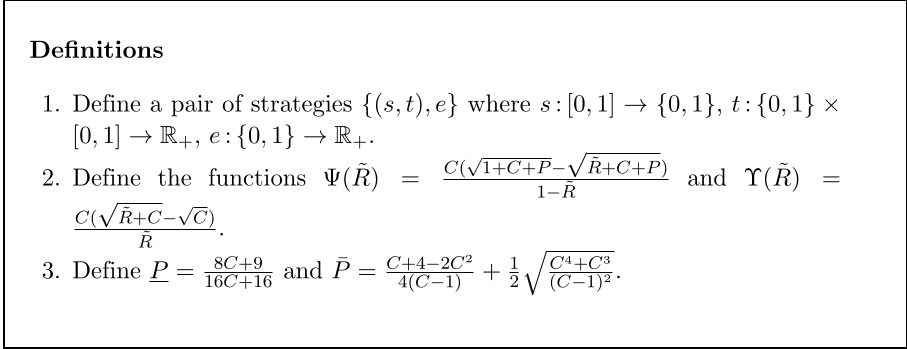
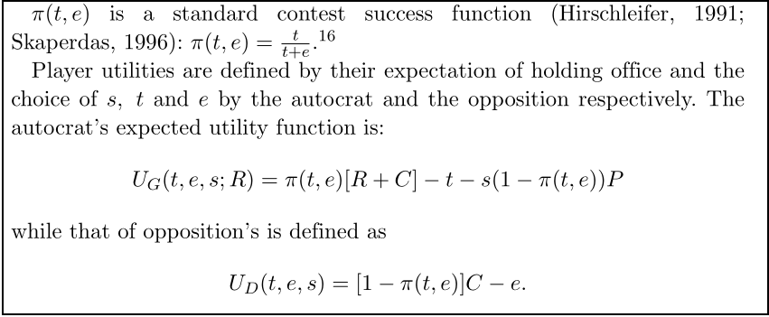
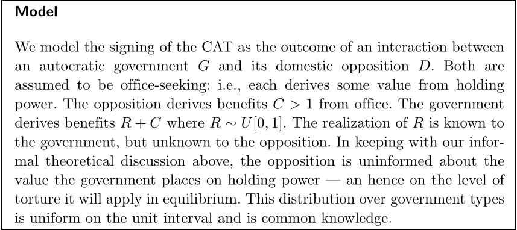
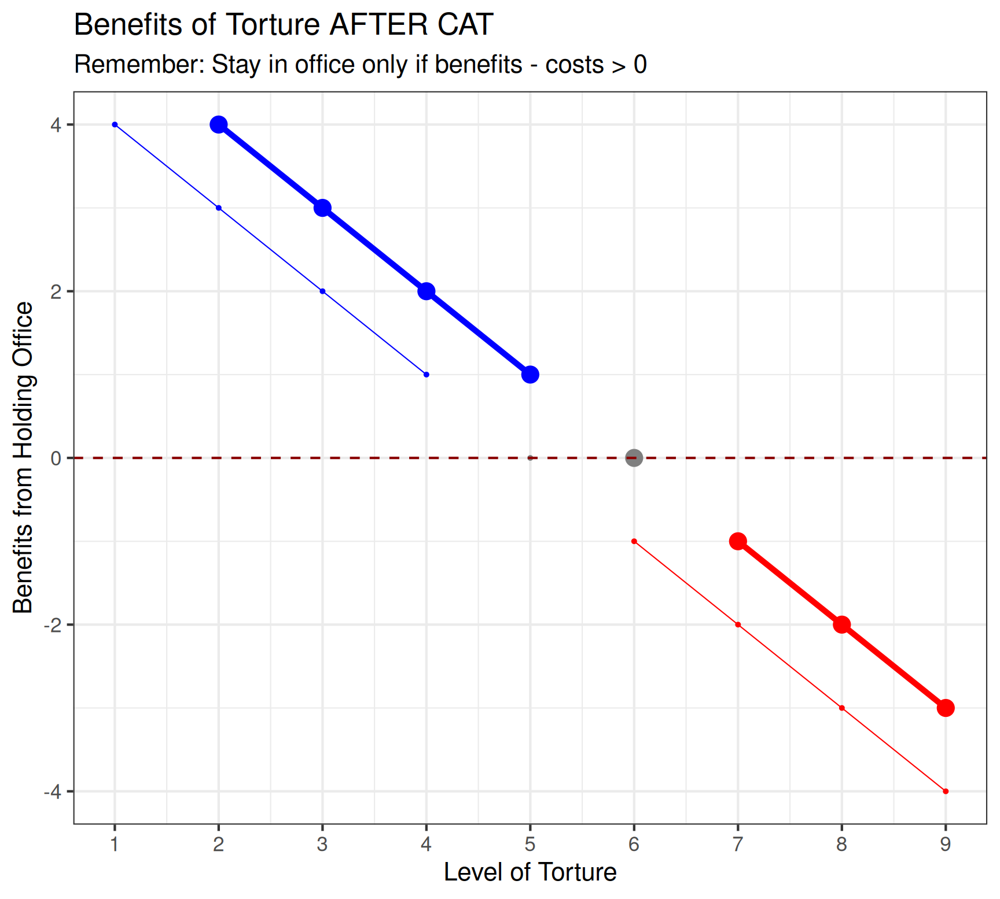
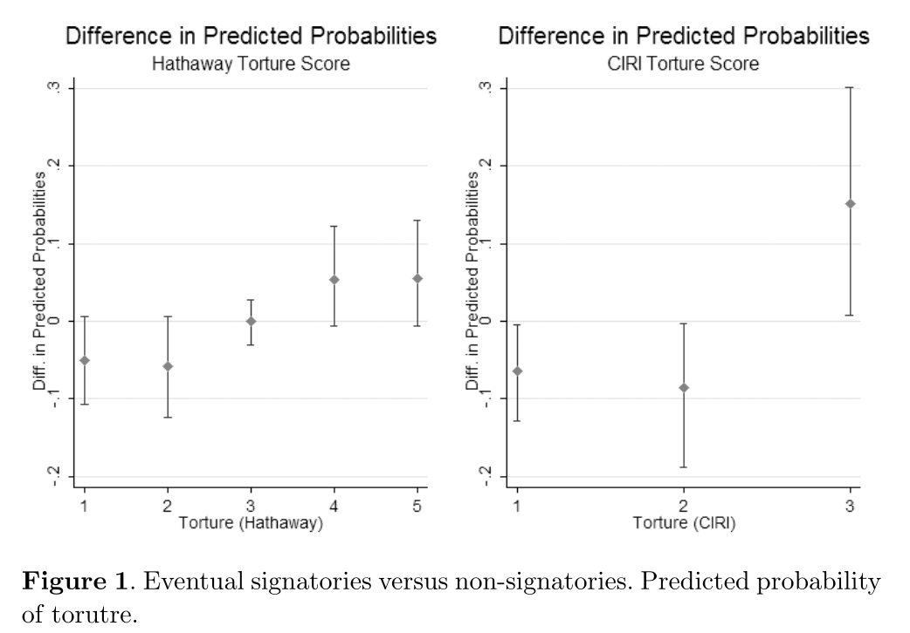
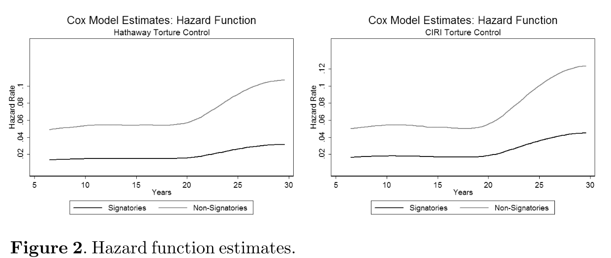
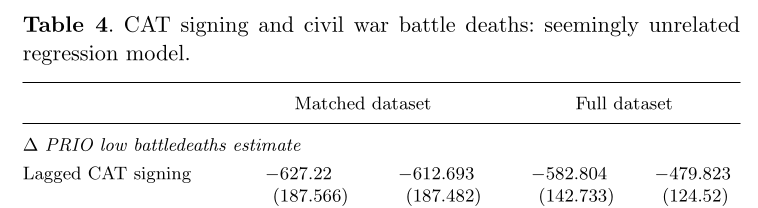

Today’s Agenda
Section 2: How effective have international institutions been in reducing the use of torture by governments around the world?
- Hollyer & Rosendorff (2011) “Why Do Authoritarian Regimes Sign the Convention Against Torture? Signaling, Domestic Politics and Non-Compliance”
Justin Leinaweaver (Fall 2026)
How effective have international institutions been in reducing the use of torture by governments around the world?
Week 6: Defining and Measuring the Outcome
Week 7: The Convention Against Torture (CAT)
Week 8: Explaining the Effect of the CAT on Torture
Week 9: The International Criminal Court (ICC)
Week 10: Can the ICC help us reduce global torture?
Week 11: Case Studies of ICC Effectiveness

Hathaway (2007): The Model
Interests:
- States will join human rights treaties whose benefits outweigh their costs
Institutions
Domestic: States vary in whether non-state actors can enforce treaty rules and the powers of the executive
International: No meaningful external enforcement
Interactions
Domestic enforcement capacity matters for costs and benefits
Domestic collateral consequences matter for costs and benefits
Transnational collateral consequences matter for costs and benefits


A Formal Model of Torture (Hollyer and Rosendorff 2011)



Hollyer & Rosendorff (2011): The Model
Interests
- ?
Hollyer & Rosendorff (2011): The Model
Interests:
The Government (G)

The Opposition (D)

Preferences: Both actors are office-seekers
Hollyer & Rosendorff (2011): The Model
Interests
- The government (G) and opposition (D) are office-seekers
Institutions
- ?
Hollyer & Rosendorff (2011): The Model
Institutions:
Benefits of office (C)

Value of office (R)

Hollyer & Rosendorff (2011): The Model
Interests
- The government (G) and opposition (D) are office-seekers
Institutions
- Holding office provides rewards to the leader (C + R) and to the opposition (C)
- The opposition can try to remove the government from power (e)
- The government can use torture to repress the opposition (t)
Interests
- The government (G) and opposition (D) are office-seekers
Institutions
Holding office provides rewards (G: C + R, D: C)
The opposition can try to remove the government from power (e)
The government can use torture to repress the opposition (t)
Choosing opposition (e) or repression (t) carries costs
Interests
- The government (G) and opposition (D) are office-seekers
Institutions
Holding office provides rewards (C and R)
The opposition can try to remove the government from power (e)
The government can use torture to repress the opposition (t)
Choosing opposition (e) or repression (t) carries costs
Ratify CAT, increase the costs of losing office (P)
Hollyer & Rosendorff (2011): The Sequence of the Game
Nature chooses the type of government (level of R is chosen)
Government chooses to join the CAT or not
Government chooses “t” and opposition chooses “e”
Nature determines if the government survives
Outcomes for the Government
Survives: R + C - t
Don’t join the CAT, lose office: 0
Join the CAT, lose office: P > 0
Hollyer & Rosendorff (2011): Interactions
Each round the government survives based on the level of torture and opposition effort applied:
\(\pi(t,e) = \frac{t}{t+e}\)


Hollyer and Rosendorff (2011): Interactions

Hollyer and Rosendorff (2011): Interactions


Hollyer and Rosendorff (2011): Findings

Hollyer and Rosendorff (2011): Findings

Hollyer and Rosendorff (2011): Findings

How effective have international institutions been in reducing the use of torture by governments around the world?
Hathaway (2007) “Why Do Countries Commit to Human Rights Treaties?”
Hollyer & Rosendorff (2011) “Why Do Authoritarian Regimes Sign the Convention Against Torture? Signaling, Domestic Politics and Non-Compliance”
For Next Class
Examining the Link Between Regime Type and the CAT
- Analyze v2x_polyarchy from the V-Dem dataset to get ready for multivariate analyses